Macchina speciale per lavorazione non standard
Progetto nato dalla necessità di automatizzare una lavorazione complessa e renderla semplice da utilizzare, con ciclo ripetibile e controlli dedicati.
- Contesto: processo manuale / variabilità elevata
- Obiettivo: ridurre errori e tempi, aumentare ripetibilità
- Soluzione: meccanica + logiche software custom integrate
- Risultato: ciclo più stabile, utilizzo più semplice
 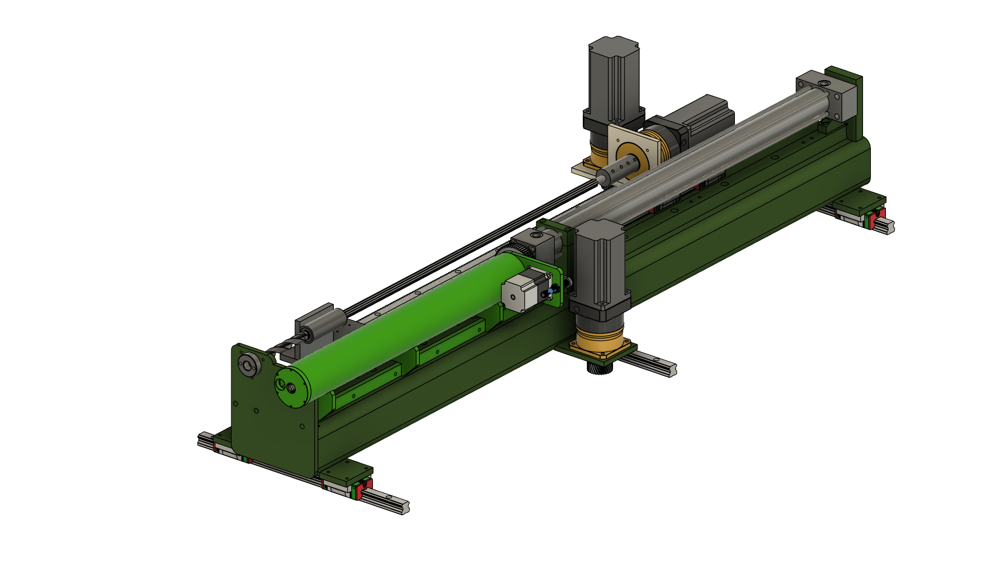
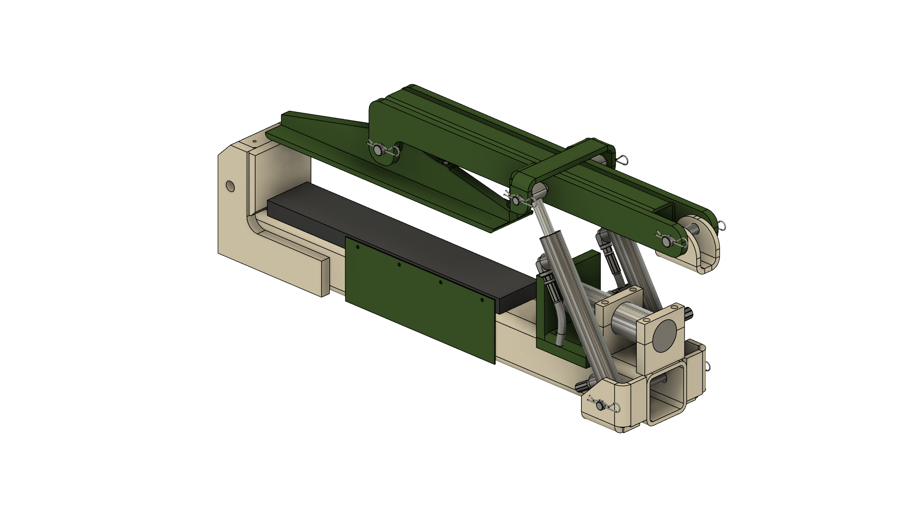
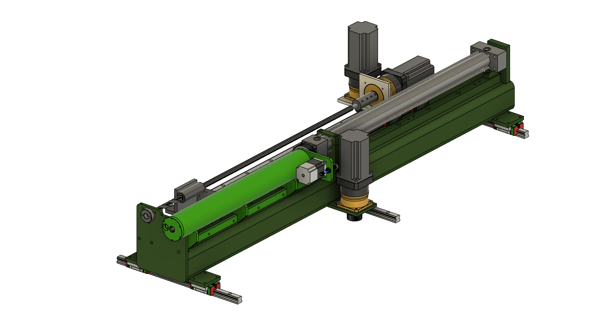
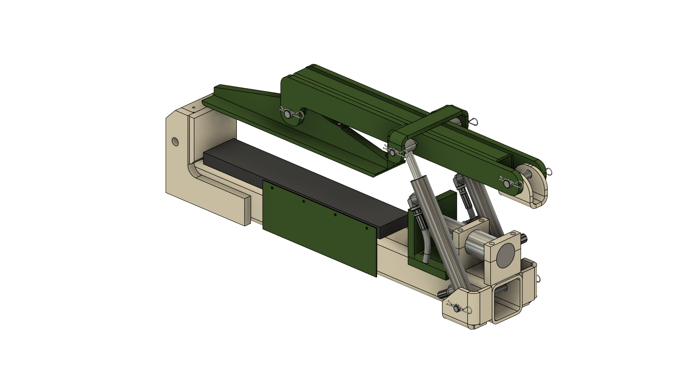
 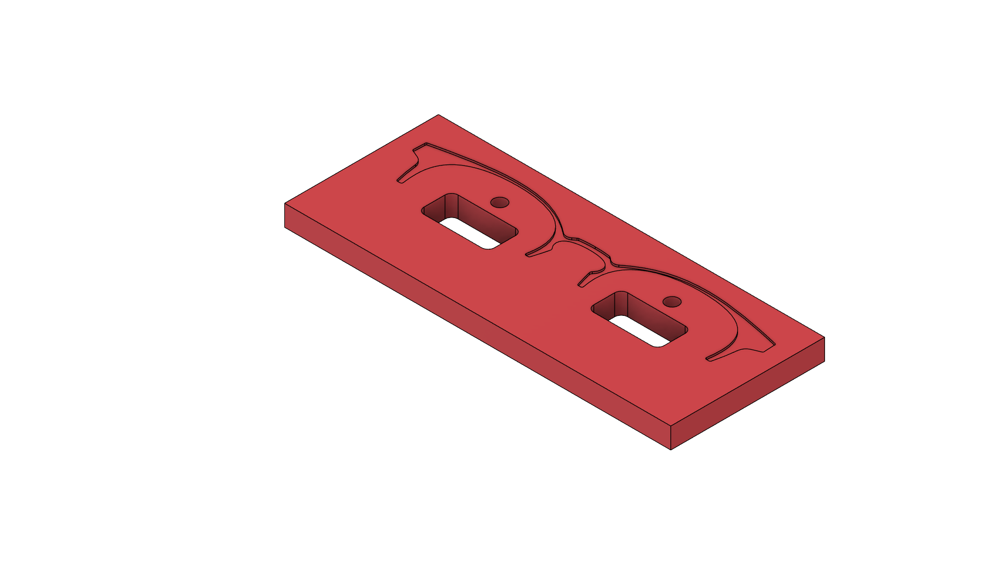
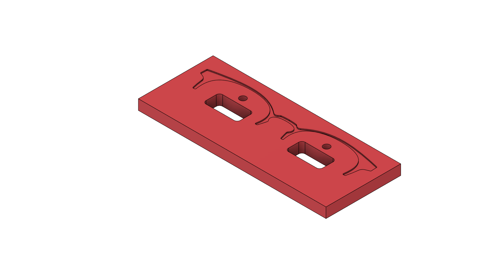


 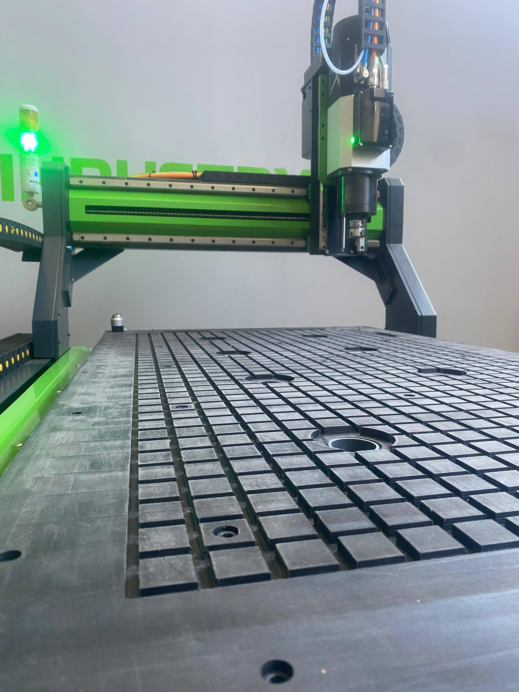
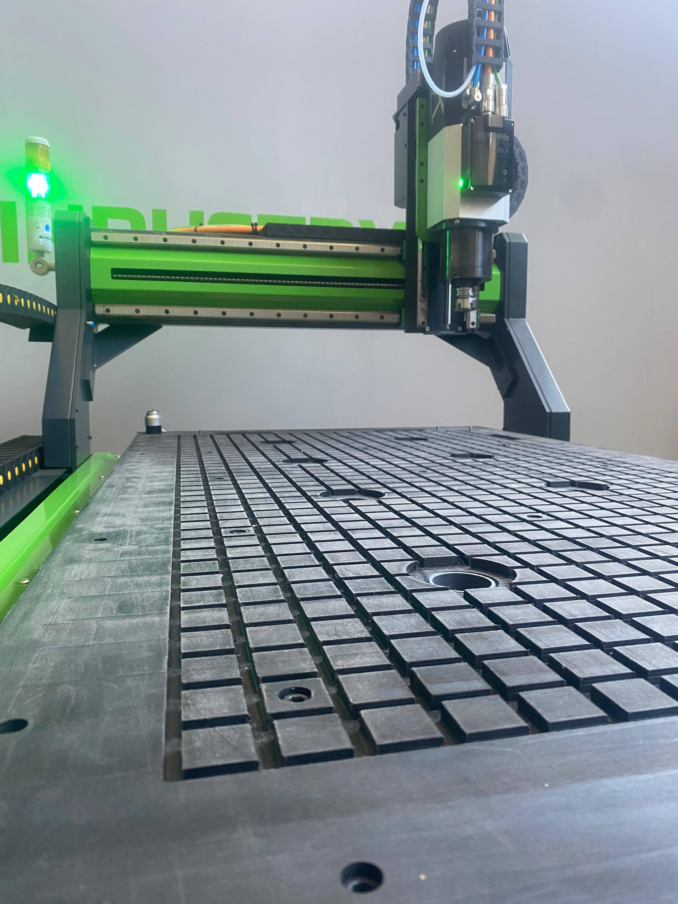
 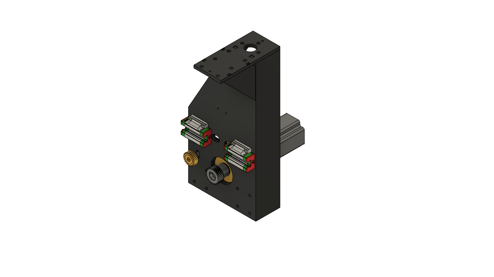
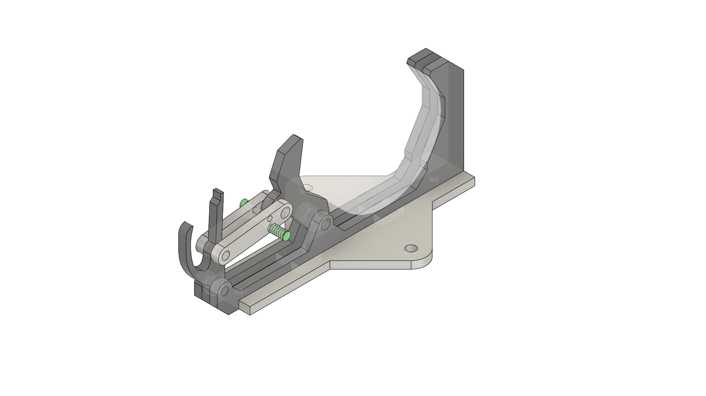
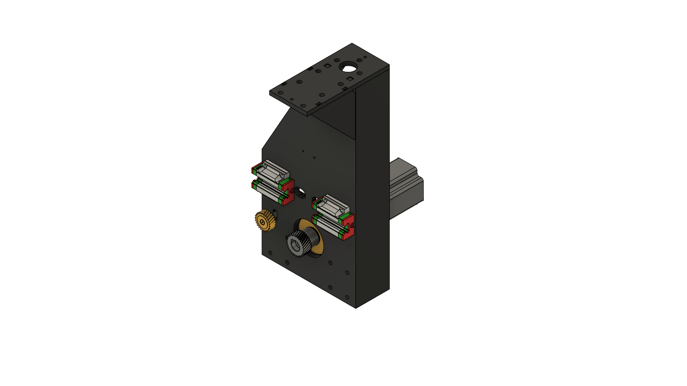
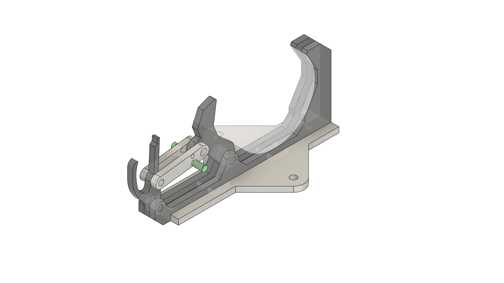